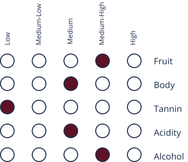

About
Chardonnay is native to Chardonnay France and was brought to Italy in the later half of the 19th century. It was previously labeled as “Pinot Chardonnay” because it was originally believed to be related to the Pinot Noir grapes, however it was later determined there is no genetic relation. Chardonnay is very popular, being the most planted grape variety in the world since the grapes are adaptable to varying climates. There are two main styles of Chardonnay’ oaked and unoaked. Oaked Chardonnay tends to contain more of a buttery flavour whereas Unoaked Chardonnay is more floral and crisp. Chardonnay has DOC recognitions in most regions of Italy where it is produced.
Taste Profile
Chardonnay
“shar-doh-NAY”

Dominant Flavors
Yellow Apple
Pineapple
Vanilla
Butter
Grapes
- Chardonnay:
is one of the world's most popular grapes that is often aged in an oak barrel
Pairings
- Seafood:
mussels, scallops, lobster, grilled halibut, grilled salmon or halibut - Pasta:
pasta with seafood, pesto sauce, mushrooms, or spinach and ricotta - Other:
minestrone, gazpacho
Serving

7℃- 12℃

Universal Glass
Regions
Friuli Venezia Giulia
Veneto
Sicily
Abruzzo
Valle d'Aosta
Piedmont
Umbria
Tuscany